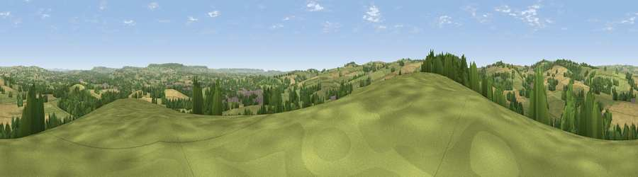

Viewpoint near Cullompton
#16915 in England · top 25% of its area beats it · near CullomptonThe view, rendered

A 360° render of this exact spot computed from the terrain model, tree cover and land cover — summer colours, afternoon light, calibrated against photographs of famous viewpoints. Real trees, hedges and buildings will differ in detail.
The panorama
Grey silhouette: terrain skyline in each direction (720 bearings, Earth curvature and refraction included). Dashed green: skyline with trees (+15 m) and buildings (+8 m) as obstacles. Blue strip: how far the ground is visible on each bearing.
Where the view opens
Wedge length = distance to the farthest visible ground on that bearing (vegetation-aware). Rings at 10, 25 and 50 km.
What fills the view
54% grassland · 26% cropland · 17% woodland · 3% built-up
Angular shares of the visible panorama (visual magnitude), not map area. Landscape diversity 0.47 (0–1 Shannon).
Key numbers
More beautiful places nearby
The staircase of upgrades: each row has a higher view potential than everything closer. Driving times are estimates from straight-line distance, calibrated against real road routing — check an actual route before setting out.
| Place | Direction | Drive | Score |
|---|---|---|---|
| Viewpoint near Bradninch | S · 4 km | ~8 min | 58.4 |
| Viewpoint near Tiverton | NW · 4 km | ~9 min | 61.8 |
| Viewpoint near Butterleigh | WSW · 4 km | ~10 min | 68.1 |
| Viewpoint near Bradninch | SSW · 4 km | ~10 min | 72.5 |
| Viewpoint near Bradninch | SSW · 5 km | ~11 min | 77.7 |
| Raddon Hills | WSW · 12 km | ~22 min | 78.2 |
| Viewpoint near Stockleigh Pomeroy | WSW · 12 km | ~22 min | 78.9 |
| Viewpoint near Whitestone | SW · 19 km | ~33 min | 79.8 |
50.86670, -3.41850 · source: screening · position refined by local search. Computed location — check access rights before visiting.